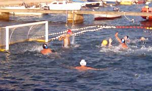
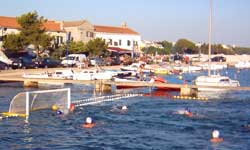

News
Tuesday, 17.8.2004. revial match
16.8.2004.
On Tuesday, 17.8.2004. match between
older players of Croatia vs. junior team will be played on Tuesday, 17.8.2004.
at 9 pm.
Competing part of season is over
15.8.2004.
Last 10th round of III. HVL, division "©ibenik" is over. Croatia
Turanj team has won only one match and have ended the season as last.
Considering that this was the first season of this team and very thin
club budget, which disabled club management to get a few extra players
aside from our players from Turanj, season can be called a success. Senior
team needed one more center, which was visible through the whole season,
while other positions were relatively successfully filled with our junior
players (which is really good management strategy, since club goal is
raising young water polo players from Turanj). Next season will undoubtedly
bring better results, at least in Turanj (since this year is not very
good for young categories in nearby clubs). Juniors team has competed
only with Zadar this season (and Gusar women team - out of competition).
Water polo season in Turanj is not over yet: juniors still have to continue
interrupted match with Gusar, and the memorial match will be played in
memoriam of Danijel Mandiæ.
Juniors defeated by Zadar again
11.8.2004.
Second game between juniors Croatia Turanj vs. Zadar 1952 ended with score
5:13 in favor Zadar 1952. Once again the key advantage of Zadar team was
the fact that they have trainings during whole year. But this time Croatia
Turanj juniors succeeded in preventing Zadar counterattacks (which sunk
them in previous match versus Zadar). They forced
Zadar on more-less static game, in which they couldn't be as good but
it was much better than previous match. Zadar has few outstanding players
(which even play in Zadar seniors team). Again, the best player was Igor
©ariæ with five goals scored and great defense play.
Juniors match versus Gusar interrupted
4.8.2004.
Juniors match versus Gusar was interrupted by rain and strong wind. At
the moment of interruption the score was 4:2 in favor of Gusar. Match
will be continued, and new date will be appointed with Gusar water polo
club.
Tisno defeated Croatia Turanj
1.8.2004.
Croatia Turanj seniors team is now last on standings
table for III. HVL ©ibenik division. After today's poor play they
have fallen to the last position. Match has finished with score of 14:2
in favor of Tisno.
Gusar sunk Croatia
30.7.2004.
Croatia Turanj seniors team were sunk at the hardest away match in league.
Gusar team is absolutely strongest, and has a perfect score of all five
matches won and score line of 74:23. From what we have seen so far, they
are the first candidate for III. HVL division ©ibenik champions.
SeniorS lost from Brodarica
25.7.2004.
In spite of rain and bad weather a match Croatia Turanj vs. Brodarica
was played, and Brodarica won by 6:2. Guest team entered the match better
and capitalized that by playing M-zone almost during whole match. Our
shooters did not respond to their defense well, and the match was lost
by the halftime. Rest of the match was much the same, except for the fact
that Croatia compacted a little and played a better defense.
First match lost in Turanj
23.7.2004.
Match Croatia Turanj vs. Primo¹ten ended with score of 5:14. From the
very beginning guest team dominated both in attack and defense segments.
Our team lost concentration at the beginning when they unforcedly lost
few balls (from which guest team scored), and then it started to go bad.
In spite of pretty equal team quality Primo¹ten used poor home team motivation
and, by using strong pressing that transformed into zone at the endings
of our attack time, went into the big lead.
Juniors lost in Zadar
21.7.2004.
In the juniors match versus Zadar 1952 our team was defeated by 22:3.
Zadar team were much better swimmers, which is normal considering that
they have had trainings during whole year. Mostly from counterattacks
they have accomplished really big score of 15:0 by halftime, and later
they only had to finish the match against weaker and broken opponent.
Victory over Tisno
20.7.2004.
 Postponed match Croatia Turanj
vs Tisno that should have been played 16.7.2004. was played today and
finished with score 7:5 in favor of Croatia. Even if it's not obvious
from the final score our players started the match really well and had
score 4:0 on halftime. They entered third quarter relaxed and finished
it with 6:1. Later on, in last quarter, younger players entered the game
and finished it peacefully. After this match played Croatia Turanj has
two points and is standing solidly in the situation where four teams have
by two points from one match won and one lost.
Seniors defeated by ZPK
18.7.2004.
Croatia Turanj seniors have lost their very first match this season. They
were defeated by ZPK with score 15:2. Team from Zagreb scored most of
their goals from counteroffensive, using the fact that they are the only
team in this division who have closed swimming pool and trainings during
whole year. Our best player was the goalkeeper who helped us not to lose
with even bigger score. During whole match ZPK was much better trained
and more complete team, while our team had troubles with physical condition.
First juniors match tie
14.7.2004.
Match between Croatia Turanj and Gusar ended with score of 7:7. At first
part of match Gusar team was better and they had advantage of 2 goals at
halftime, but our team continued better and accomplished to equalize until
the end of the match.
Croatia Turanj Web site opened!!!
1.7.2004.
Water polo club Croatia Turanj Web site is finally released and available
from 1.7.2004. From now on all info about club, players and other things
regarding club can be found on www.vkcroatia.hr.
1st round of III. senior league1.7.2004.
First match in III. league senior competition, Croatia Turanj vs. Tisno
is going to take place on 17.7.2004. at 7.00pm.
Water polo season started:
28.6.2004.
Trainings for junior categories have started on Monday 28.6.2004. Matches
schedule will be determined on Sunday 4.7.2004. in club chambers in Turanj.
Schedule will be posted on www.vkcroatia.hr
|